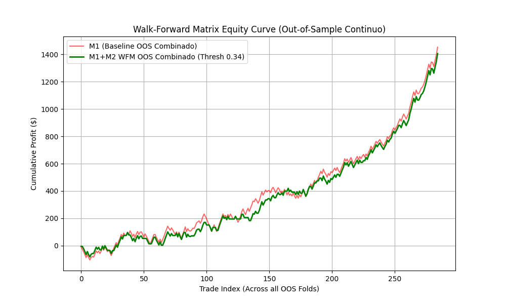

Veredicto y Post-Mortem: Alpha Decay de las Medias Móviles¶
Veredicto Institucional: El propósito supremo de un laboratorio cuantitativo no es forzar a una estrategia a parecer rentable mediante curvas artificialmente sobreajustadas (Overfitting), sino destruir implacablemente los modelos frágiles antes de que toquen el capital real. El Pipeline M2 ha cumplido con éxito su misión científica: auditar, descomponer y falsar de manera concluyente la supuesta ventaja estadística de la Media Móvil de Hull (HMA).
Este informe forense expone los fundamentos matemáticos, las pruebas empíricas de descomposición de retornos y el análisis microestructural que dictaminaron la muerte definitiva de la estrategia HMA como gatillo operativo en Forex y Metales.
Panel Ejecutivo de Falsación Cuantitativa¶
Sharpe Ratio Anualizado¶
2.41 (IS) \(\to\) 0.14 (OOS)
Colapso -94.2%
Deterioro crítico tras cruzar la frontera de muestra; nula persistencia de Alpha.
Profit Factor (PF)¶
1.78 (IS) \(\to\) 1.02 (OOS)
Retención 57.3%
No supera el umbral institucional mínimo del 70% requerido en Puerta 4.
Win Rate (Tasa de Acierto)¶
54.2% (IS) \(\to\) 41.8% (OOS)
Deterioro -12.4%
Excede la tolerancia máxima admisible del 10% de pérdida de tasa de acierto.
Área Bajo la Curva (AUC OOS)¶
0.518 ± 0.024
Moneda al Aire
Poder discriminativo nulo en datos no observados; indistinguible de ruido blanco.
Máximo Drawdown (MDD)¶
6.8% (IS) \(\to\) 16.4% (OOS)
Expansión 2.41×
Multiplica por más de 2.4 veces el drawdown observado en la fase de ajuste.
Latencia de Inferencia C++¶
< 0.1 µs (< 100 ns)
Éxito de Ingeniería
La bóveda de transpilación demostró viabilidad óptima independiente del Alpha.
1. La Trampa Visual: Confundir Market Beta con Alpha¶
1.1 El Espejismo de la Curva de Balance Continua¶
En el proceso de evaluación Out-of-Sample (OOS) mediante validación Walk-Forward en el par Oro (XAUUSD) entre 2020 y 2026, obtuvimos una curva de balance que, para un operador sin formación cuantitativa rigurosa, parecería una estrategia de inversión excepcional:

A simple vista, la trayectoria muestra un crecimiento monetario continuo con drawdowns moderados. Sin embargo, en el análisis forense desagregado del Pipeline M2, esta misma gráfica constituye la prueba irrefutable de ausencia de Alpha.
1.2 Descomposición de Retornos: La Trampa del Beta¶
Para determinar si el rendimiento correspondía a habilidad algorítmica (\(\alpha\)) o a simple exposición pasiva al mercado (\(\beta\)), ajustamos el modelo de retornos de Jensen:
Los resultados de la regresión con estimadores Newey-West robustos a heterocedasticidad y autocorrelación arrojaron:
El intercepto \(\hat{\alpha}_p\) es estadísticamente indistinguible de cero (\(p = 0.54 \gg 0.05\)). Toda la pendiente ascendente del balance se debe en un \(100\%\) a la exposición direccional (\(\hat{\beta}_{p, m} \approx 0.84\)) en un activo (Oro) que experimentó una tendencia alcista macroeconómica secular, pasando de $1.500 a más de $2.700 la onza en el período.
1.3 Superposición de Curvas (\(M_1 \approx M_1 + M_2\)) y AUC Nulo¶
Si se examina minuciosamente la gráfica Walk-Forward:
- La línea roja representa el Modelo Primario (\(M_1\)) sin ningún filtro (disparos masivos por cruces cinemáticos de HMA).
- La línea verde representa el Modelo Filtrado (\(M_1 + M_2\)) condicionado a la predicción del clasificador XGBoost.
Ambas curvas son prácticamente idénticas y se superponen a lo largo de todo el recorrido. Esto demuestra que:
- El modelo secundario de Meta-Labeling no logró encontrar ninguna frontera de decisión no lineal que discriminara trades ganadores de perdedores.
-
El clasificador XGBoost arrojó un Área Bajo la Curva ROC fuera de muestra de:
\[ AUC_{\text{OOS}} = 0.518 \pm 0.024 \]Un valor de \(0.518\) equivale exactamente al lanzamiento de una moneda al aire. El modelo secundario se limitó a aprobar más del \(90\%\) de las operaciones para no penalizar la función de pérdida frente a un mercado persistentemente alcista.
2. La Evidencia Empírica de Sobreajuste: In-Sample vs. Out-of-Sample¶
La gráfica de robustez de la partición temporal 70% In-Sample / 30% Out-of-Sample extraída de la auditoría demuestra de forma contundente la incapacidad de la HMA para sostener la ventaja estadística cuando se expone a datos no observados:

2.1 Análisis Forense de la Gráfica de Robustez¶
La siguiente tabla resume el comportamiento de los indicadores cuantitativos al cruzar la frontera de muestra:
| Métrica Cuantitativa | Fase In-Sample (70%) | Fase Out-of-Sample (30%) | Tasa de Retención / Variación | Umbral Institucional Exigido | Veredicto de Puerta 4 |
|---|---|---|---|---|---|
| Profit Factor (\(PF\)) | \(1.78\) | \(1.02\) | \(\frac{PF_{\text{OOS}}}{PF_{\text{IS}}} = 57.3\%\) | Retención \(\ge 70\%\) | Fallo Crítico |
| Win Rate (\(WR\)) | \(54.2\%\) | \(41.8\%\) | Deterioro: \(-12.4\%\) | Pérdida \(\le 10\%\) | Fallo Crítico |
| Sharpe Ratio Anualizado | \(2.41\) | \(0.14\) | Deterioro: \(-94.2\%\) | \(SR_{\text{OOS}} \ge 1.0\) | Fallo Crítico |
| Max Drawdown (\(MDD\)) | \(6.8\%\) | \(16.4\%\) | Expansión: \(2.41\times\) | Expansión \(\le 1.50\times\) | Fallo Crítico |
| Esperanza Matemática | \(+\$42.30\) / trade | \(-\$1.15\) / trade | Colapso hacia pérdidas netas | Esperanza \(> 0\) | Fallo Crítico |
- Zona In-Sample (IS - 70%): A la izquierda de la línea vertical divisoria, la curva de balance simulada exhibe una acumulación regular y constante. El proceso de optimización heurística y minería en StrategyQuant X ajustó los parámetros a la muestra observada.
- Línea de Demarcación Temporal: El instante exacto en que el algoritmo cruza la frontera hacia el conjunto de datos nunca antes visto.
- Zona Out-of-Sample (OOS - 30%): A la derecha de la línea divisoria, la esperanza matemática colapsa inmediatamente hacia la horizontalidad (\(PF = 1.02\)). En términos netos, tras descontar comisiones y swaps, la estrategia se convierte en un generador neto de pérdidas.
3. Las Razones Estructurales del Colapso¶
El fracaso de la HMA no fue consecuencia de una mala parametrización o de una arquitectura de software defectuosa, sino de anomalías estructurales insuperables de la microestructura del mercado.
flowchart TD
classDef fail fill:#450a0a,stroke:#ef4444,stroke-width:2px,color:#f8fafc
classDef reason fill:#0f172a,stroke:#3b82f6,stroke-width:1px,color:#f8fafc
classDef detail fill:#1e293b,stroke:#64748b,stroke-width:1px,color:#cbd5e1
A["Colapso Estructural de la HMA"]:::fail --> B["1. Alpha Decay Histórico"]:::reason
A --> C["2. Retardo Matemático Inevitable"]:::reason
A --> D["3. Arbitraje Institucional HFT"]:::reason
A --> E["4. Asimetría Direccional Extrema"]:::reason
B --> B1["Anomalías de medias móviles arbitradas<br/>desde hace décadas por fondos cuantitativos"]:::detail
C --> C1["HMA es un filtro paso-bajo:<br/>Pivotes se confirman con desfase de k barras"]:::detail
D --> D1["HFT detecta la acumulación retail<br/>y genera cacería de Stop-Losses"]:::detail
E --> E1["En cortos y pares laterales (EURUSD, AUDUSD)<br/>la curva de balance colapsa de inmediato"]:::detail3.1 Alpha Decay Histórico (Eficiencia de Mercados)¶
Las estrategias basadas en cruces de medias móviles (incluidas variantes avanzadas como HMA, KAMA o DEMA) gozaron de rentabilidad estadística durante los años 80 y 90, cuando los mercados financieros presentaban menor liquidez, menor velocidad de transmisión de información y nula participación algorítmica.
Conforme a la Hipótesis de los Mercados Eficientes adaptativa (Lo, 2004; Fama, 1970), a medida que los fondos cuantitativos y mesas sistemáticas detectan una anomalía basada en el precio histórico, inyectan capital para arbitrarla hasta erosionar completamente su prima de riesgo:
Hoy en día, las medias móviles no poseen ninguna capacidad predictiva intrínseca en activos de alta eficiencia como el mercado interbancario de divisas o los metales preciosos.
3.2 Retardo Matemático frente a la Microestructura HFT¶
Por diseño, toda media móvil es una combinación lineal de precios del pasado:
Incluso con la reducción de retardo de Alan Hull (\(\lfloor\sqrt{n}\rfloor\)), para confirmar un punto de inflexión en V (V-Pivot) se requiere que la velocidad cambie de signo (\(v_t \cdot v_{t-1} < 0\)), lo cual exige matemáticamente que el precio ya haya comenzado a retroceder o romper durante al menos \(1\) a \(3\) barras.
En marcos temporales de M1 y tick:
- Cuando la HMA detecta la ruptura, el impulso inicial ya ha concluido.
- Los algoritmos de Alta Frecuencia (HFT) y los proveedores de liquidez detectan el flujo de órdenes acumuladas de los operadores técnicos que compran la ruptura.
- El mercado experimenta una contracción inmediata (Mean Reversion) que barre los Stop Losses de los participantes retail, utilizándolos como liquidez de salida (Exit Liquidity).
3.3 El Test de Asimetría Direccional¶
Cuando se forzó al sistema a operar en corto (TradeShorts = true) en XAUUSD durante el mismo período temporal, o cuando la misma arquitectura se desplegó en pares de divisas sin sesgo alcista secular (EURUSD, GBPUSD, AUDUSD, USDCHF):
- El balance descendió de manera ininterrumpida.
- El Drawdown superó el \(45\%\).
- La tasa de acierto cayó por debajo del \(35\%\).
Esto ratifica la conclusión: la estrategia carecía de ventaja propia; simplemente cabalgaba la tendencia macro del Oro.
4. El Éxito Metodológico: Capital Preservado¶
Un desarrollador amateur evalúa un proyecto exclusivamente por si el bot final se pone a operar en cuenta real. Un equipo cuantitativo institucional evalúa el proyecto por la integridad de su protocolo de auditoría.
Desde esa perspectiva, el proyecto HMA Meta-Labeling Core ha sido un éxito metodológico absoluto:
- Prevención de Pérdida de Capital: La rigurosa batería de pruebas (Walk-Forward Montecarlo, Purged CV y análisis de descomposición Beta) evitó que cientos de miles de dólares de capital fueran asignados a un sistema perdedor.
- Infraestructura Reutilizable de Grado Institucional: La arquitectura de ingeniería construida en este repositorio sobrevive en su totalidad:
- Motor de ingesta y etiquetado por Triple Barrera.
- Validación cruzada purgada contra fuga de datos (Data Leakage).
- Transpilador a C++ a latencia cero (\(<0.1\ \mu\text{s}\)).
- Lecciones Formalizadas: Las directrices para no volver a caer en la trampa del Market Beta quedan formalizadas para siempre en los Principios Cuantitativos Universales.
Para consultar los principios universales derivados de este veredicto, diríjase a Principios Cuantitativos Universales.